Payload Range Diagram
RunPayloadRange computes and plots the payload-range diagram
The main file for running the Design Case is FindDesignPoint For brief description type: help FindDesignPoint
Created by: D Rezgui, S Mitchell and M Gibbons Copyright: University of Bristol
Contents
Initialise aircraft parameters
delete Par; clear Par;
clear; clc disp(' ') disp(' ******** Aircraft Performance Tool ********'); disp(' ******** Payload Range Diagram ********') disp([' ', datestr(clock)]); disp(' ') % Read Aircraft data from a re-defined file, e.g. 'AC_B777_AJenk'or 'AC_150C_twin' ParFunc = 'AC_B777_AJenk'; % or ParFunc = 'AC_150C_twin'; Par = eval(ParFunc); % Set parameters in the "Par" object, % Default values are set in the ParFunc disp(['... Aircraft parameters are set, based on ', ParFunc, ' data file']) disp(' ') % Reset parameters from default values (other parameters can be changed in % the Par object) Par.PL_req = 29050; % Required payload mass [kg] % You can also reset the following parameters. (you can also change these parameters in the ParFunc file) % Par.Range_req = 4779; % Required design range [nm] % Par.S = 376.4; % Wing area [m^2] % Par.PLmax = 45000; % Max payload [kg] % Par.MFC = 80000; % Max Fuel capacity [kg] % Par.MTOM = 230000; % Max Take Off Mass [kg] % Par.Airframe = 130000; % Operating Mass Empty [kg] % Par.Alt_Cruise = 35000; % Cruise Alt [ft] % Par.DragRise = 0; % Flag to switch drag rise in the drag polar: 1 = Yes, 0 = No % Reset engine data parameters (if needed) Par.interp_method = 'linear'; % or 'spline' - 'spline' is slower but allows to extrapolate data Par.M_ext = []; % Extend Mach number range to M_ext - change to something like 0.1 if needed
******** Aircraft Performance Tool ********
******** Payload Range Diagram ********
20-Feb-2017 14:06:03
... Aircraft parameters are set, based on AC_B777_AJenk data file
Payload range diagram for case : MTOM = 230000 kg (Max Take Off Mass)
Par.MTOM = 230000;; % Max Take Off Mass [kg] % Calculate the properties of the payload range diagram plrd(1) = FindPayloadRangeDiag(Par); % Plot the payload range diagram PlotPLRD(plrd(1), 'b') % call plotter for payload range diagram % Plot Mission Profile PlotMission(plrd(1).dp.Mission) % Call plotter for mission profile
... Engine data prepared from UBB65Data Calculate the value of payload at the intersection point of MTOM curve with MFC line ............................... Done Calculate the value of range at the intersection point of the MTOM curve with MFC curve .... Done Calculate the points along the curves that define the payload range diagram For the MTOM curve, calculating the range at each point ....... Done For the MFC curve, calculating the range at each point ....... Done Calculating the range for the required design payload .... Done Plot Payload/Range Diagram ... Done ....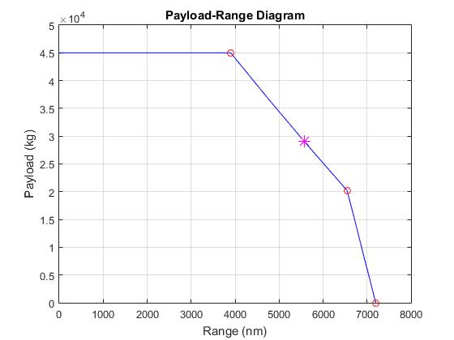 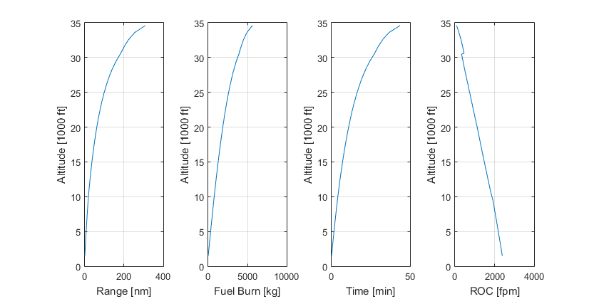 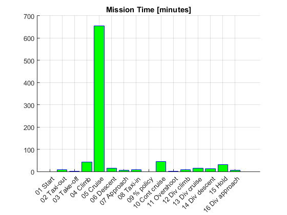 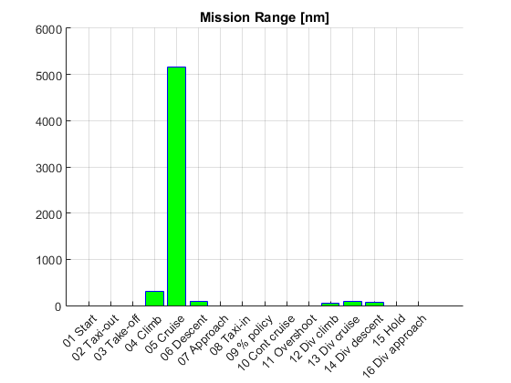 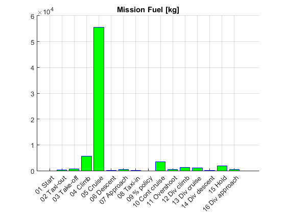 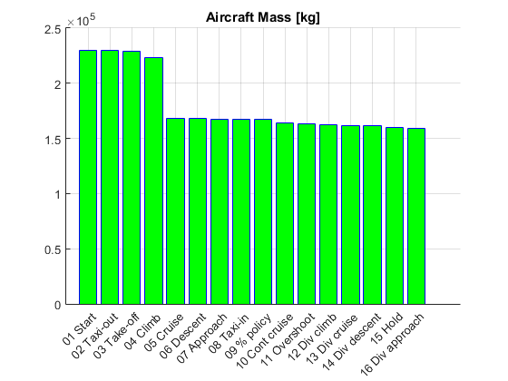
Payload range diagram for case : MTOM = 220000 kg (Max Take Off Mass)
Par.MTOM = 220000; % Max Take Off Mass [kg] % Calculate the properties of the payload range diagram plrd(2) = FindPayloadRangeDiag(Par); % Plot the payload range diagram PlotPLRD(plrd(2), 'g') % call plotter for payload range diagram % Plot Mission Profile PlotMission(plrd(2).dp.Mission) % Call plotter for mission profile
... Engine data prepared from UBB65Data Calculate the value of payload at the intersection point of MTOM curve with MFC line ............................... Done Calculate the value of range at the intersection point of the MTOM curve with MFC curve .... Done Calculate the points along the curves that define the payload range diagram For the MTOM curve, calculating the range at each point ....... Done For the MFC curve, calculating the range at each point ....... Done Calculating the range for the required design payload .... Done Plot Payload/Range Diagram ... Done ....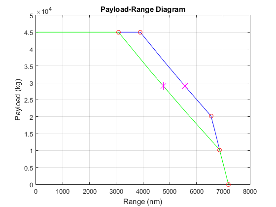 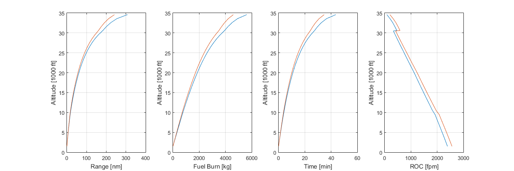 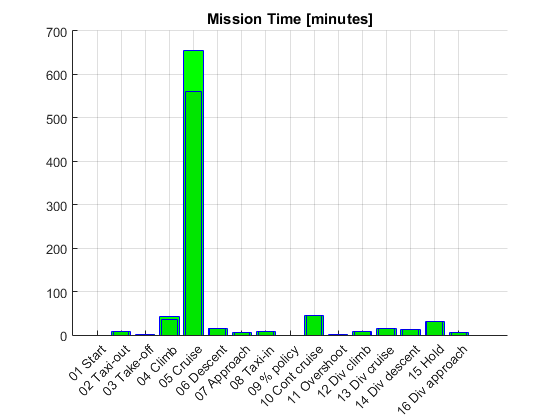 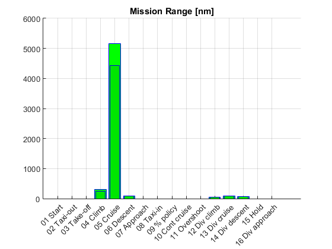 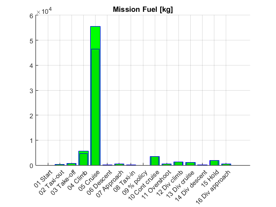
Save results
savefile = 'PayloadRange.mat'; save(savefile, 'plrd');